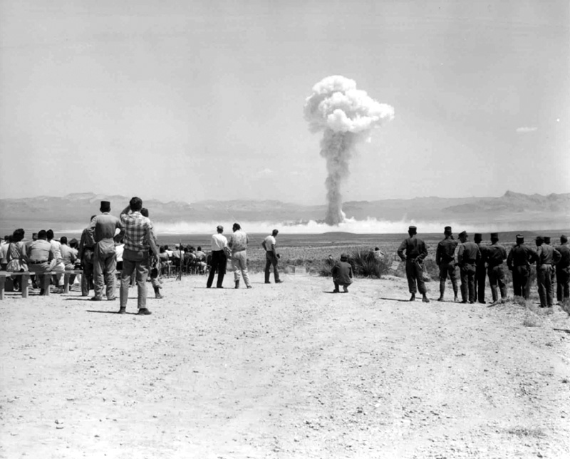

Азаматтық қорғаныс Civil Defense Гражданская оборона и защита
Үш түрі — ядролық, химиялық, биологиялық; зақымдаушы факторлары мен қорғану тәсілдері. Three types — nuclear, chemical, biological; their damaging factors and protection. Три вида — ядерное, химическое, биологическое; поражающие факторы и защита.

Жаппай қырып-жою қаруы (ЖҚЖҚ / ОМП) — қысқа мерзімде жаппай адам шығыны мен зор қиратуларға арналған, зақымдау қабілеті ерекше жоғары қару. Үш түрі бар: ядролық, химиялық, биологиялық. Олардың таралуы халықаралық шарттармен шектелген, бірақ азаматтық қорғаныс шаралары әркімге қажет. Weapons of mass destruction (WMD) are weapons of exceptional destructive power meant to cause mass casualties and devastation in a short time. There are three types: nuclear, chemical and biological. Their spread is limited by international treaties, yet civil-defence measures remain essential for everyone. Оружие массового поражения (ОМП) — оружие исключительной поражающей способности, предназначенное для массовых потерь и разрушений в короткий срок. Три вида: ядерное, химическое, биологическое. Их распространение ограничено международными договорами, но меры гражданской обороны нужны каждому.
| ФакторFactorФактор | ӘсеріEffectДействие | Энергия үлесіShare of energyДоля энергии |
|---|---|---|
| Соққы толқыныShock waveУдарная волна | Қирату, контузия, жарақаттар.Destruction, concussion, injuries.Разрушения, контузии, травмы. | ≈ 50%≈ 50%≈ 50% |
| Жарық сәулесіLight radiationСветовое излучение | Күйіктер, көздің зақымдануы, өрттер.Burns, eye injury, fires.Ожоги, поражение глаз, пожары. | ≈ 35%≈ 35%≈ 35% |
| Өткіш радиацияPenetrating radiationПроникающая радиация | Алғашқы 10–15 с гамма- және нейтрон ағыны; сәулелік ауру.Gamma and neutron flux in the first 10–15 s; radiation sickness.Поток гамма и нейтронов в первые 10–15 с; лучевая болезнь. | ≈ 5%≈ 5%≈ 5% |
| Жердің радиоактивті ластануыRadioactive contaminationРадиоактивное заражение местности | Радиоактивті бұлт пен жауын-шашын; ұзақ сәулелену.Radioactive cloud and fallout; long-lasting irradiation.Радиоактивное облако и осадки; длительное облучение. | ≈ 10%≈ 10%≈ 10% |
| Электромагниттік импульс (ЭМИ)Electromagnetic pulse (EMP)Электромагнитный импульс (ЭМИ) | Электроника, байланыс пен энергожүйелерді істен шығарады.Disables electronics, communications and power grids.Выводит из строя электронику, связь и энергосети. | ——— |
Жарылыс түрлері: ауадағы, жердегі (биіктегі), жерасты және суасты. Қуаты: тротил эквивалентімен (кт, Мт) өлшенеді. Types of burst: air, surface (and high-altitude), underground and underwater. Yield is measured in TNT equivalent (kt, Mt). Виды взрывов: воздушный, наземный (и высотный), подземный и подводный. Мощность измеряется в тротиловом эквиваленте (кт, Мт).
Уландырғыш заттар (УЗ / ОВ) тыныс алу мүшелері, тері және ас қорыту жолдары арқылы зақымдайды. Физиологиялық әсері бойынша негізгі топтары: Toxic agents (CA) injure through the respiratory organs, the skin and the digestive tract. The main groups by physiological effect are: Отравляющие вещества (ОВ) поражают через органы дыхания, кожу и ЖКТ. Основные группы по физиологическому действию:
| ТобыGroupГруппа | МысалдарExamplesПримеры | Зақымдау белгілеріSigns of injuryПризнаки поражения |
|---|---|---|
| Жүйке-салNerveНервно-паралитические | зарин, V-газдарsarin, V-agentsзарин, V-газы | Қарашықтың тарылуы, құрысу, тұншығу.Pinpoint pupils, convulsions, choking.Сужение зрачков, судороги, удушье. |
| Тері-күлдіреткішBlisterКожно-нарывные | иприт, люизитmustard, lewisiteиприт, люизит | Тері күлдіреп, жара пайда болады.Skin blisters and ulcers form.Пузыри и язвы на коже. |
| ТұншықтырғышChokingУдушающие | фосгенphosgeneфосген | Өкпе ісінуі, тыныс жетіспеуі.Lung oedema, shortness of breath.Отёк лёгких, одышка. |
| Жалпы улағышBlood / general-poisonОбщеядовитые | синиль қышқылыhydrogen cyanideсинильная кислота | Жасуша тынысын бұзады, тез әсер етеді.Blocks cell respiration, acts fast.Нарушает клеточное дыхание, действует быстро. |
| ТітіркендіргішIrritantРаздражающие | CS, CN (хлорацетофенон)CS, CN (chloroacetophenone)CS, CN (хлорацетофенон) | Көз бен тыныс жолдарын тітіркендіреді.Irritates the eyes and airways.Раздражает глаза и дыхательные пути. |
| ПсихохимиялықPsychochemicalПсихохимические | BZBZBZ | Уақытша психикалық бұзылыс.Temporary mental impairment.Временное расстройство психики. |
Қорғану: противогаз, ОЗК, антидоттар (мысалы, шприц-түтікше), химиялық барлау приборымен (ВПХР) анықтау. Protection: gas mask, OZK suit, antidotes (e.g. an autoinjector), detection with a chemical-recon device (VPKhR). Защита: противогаз, ОЗК, антидоты (например, шприц-тюбик), обнаружение прибором химразведки (ВПХР).
Ауру тудыратын микроорганизмдер мен токсиндер — бактериялар (оба, сібір жарасы), вирустар (геморрагиялық қызба), риккетсиялар мен токсиндер. Олар жаппай ауруларды — эпидемияларды тудырады әрі жасырын инкубация кезеңіне ие. Disease-causing microorganisms and toxins — bacteria (plague, anthrax), viruses (haemorrhagic fevers), rickettsiae and toxins. They trigger mass illness — epidemics — and have a hidden incubation period. Болезнетворные микроорганизмы и токсины — бактерии (чума, сибирская язва), вирусы (геморрагические лихорадки), риккетсии и токсины. Вызывают массовые заболевания — эпидемии — и имеют скрытый инкубационный период.
Қолдану тәсілдері: аэрозоль (негізгі), зақымдалған тасымалдаушылар (жәндіктер, кеміргіштер), азық-түлік пен суды ластау. Means of use: aerosol (the main one), infected vectors (insects, rodents), contamination of food and water. Способы применения: аэрозоль (основной), заражённые переносчики (насекомые, грызуны), заражение пищи и воды.
Қорғану: ЖҚҚ (СИЗ), егу (вакцинация), карантин мен обсервация, дезинфекция, санитарлық-гигиеналық тәртіп. Protection: PPE, vaccination, quarantine and observation, disinfection, strict sanitary-hygiene discipline. Защита: СИЗ, вакцинация, карантин и обсервация, дезинфекция, строгий санитарно-гигиенический режим.